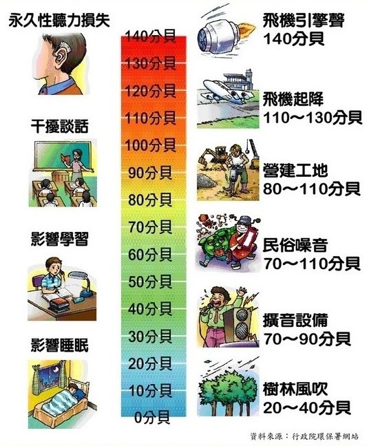

噪音汙染
什麼是噪音?

「噪音」是指發生的聲音超過管制標準，其單位以分備來表示。一般判定噪音最簡單的方式就是聽了以後會讓人感到 不舒適的聲音，像是太大聲的聲音等，這樣的聲音就屬於「噪音」。
對於噪音的標準，每個人的感受不同，若以數據來判定，通常在50分被以下，人會感到舒適；在50~70分貝之間，則會引起
些微的不舒服，音量在70分貝以上，就會讓人產生焦慮不安，引發各種狀況。
音量以「分貝」來表示。分貝指的是聲音強度的單位，也就是音量大小的單位，以Deci-Bel(dB(A))來表示。通常一般人的 耳朵能聽見的範圍在0~140dB(A)之間。
噪音的特徵
1.對噪聲的感受因各人的感覺、習慣等不同；對於某人喜歡的聲音，可能對於另一個人是噪聲；噪聲是一個主觀的感受。
2.噪聲一般帶有局部的特點，在空氣中傳播時衰減快；但有時噪聲的影響範圍也很廣。
3.噪聲在環境中不會產生殘剩污染，一旦停止發聲，噪聲污染立即消失。
噪音監測
噪音監測由縣市環保局依需要設站監測，依監測類型可分為環境音量監測與道路交通音量監測。噪音監測之統計資料每季由 環保署進行彙整， 提供民眾瞭解各縣市噪音監測之不合格情形。「不合格」指監測所得環境音量之能量平均值超過「環境音量標準」中之「一般地區環境音量標準」 與「道路交通噪音標準」。
99年起監測時段別變更為下列3個時段： 日間：第1、2 類噪音管制區指上午06時至晚上08時；第3、4 類噪音管制區指上午07時至晚上08時 晚間：第1、2 類噪音管制區指晚上08時至晚上10時；第3、4 類噪音管制區指晚上08時至晚上11時 夜間：第1、2 類噪音管制區指晚上10時至翌日上午6時；第3、4類噪音管制區指晚上11時至翌日上午7時以下為106~108年的監測站資料↓
公害陳情(噪音)
台北市政府設有稽查大隊，稽查大隊為加強為民服務，對於市民陳情之環境污染(公害)案件，採二十四小時三班制執勤方式加以查處。依據 現行噪音管制法、空氣污染防制法、廢棄物清理法、水污染防治法等相關環保法規暨相關勤務規定，執行稽查告發工作。
對於違法告發之案件，則依據「本大隊違反環境保護法規舉發案件處理程序作業要點」進行審核、登錄，並續依「違反各項環保法令案件填 單舉發不符處分要件標準表」及「臺北市政府環境保護局各類違反環保法令案件裁罰基準」執行處分。
以下為「營建工程噪音告發案件」與「娛樂場所噪音告發案件」的資料，只要是市民的要求，稽查大隊一定會在第一時間前去稽查↓。
公害陳情方式
一、電話
- 1.台北市政府臺北市民當家熱線1999報案
- 2.行政院環保署報案專線080-0066666
二、網路通報
- 1.公害污染網路陳情系統
- 2.台北市單一陳情系統
- 3.噪音車檢舉網站
目前針對噪音的施政計畫
行政院環保署102年8月5日修正發布「噪音管制標準」，修正要點如下：
- 一、修正各管制區時段區分，以符合民眾生活作息時間。增列週期性變動、間歇性變動、百分率音壓位準、工廠（場）、娛樂場所、營業場所、營建工程、擴音設施及整體音量之定義。
- 二、增訂欲測量音源之背景音量修正公式，並將修正值細分如附表背景音量修正表，以提高測量值之精確度。
- 三、將非擴音設施音源量測地點改採正面表列方式，並修正部分文字以明確化測量地點選擇時之優先性。
- 四、增列測量時之氣象條件規定，以茲明確。
- 五、增列初測時應將噪音發生源操作條件予以記錄，以作為複查時之依據。
- 六、修訂週期性變動噪音、間歇性變動噪音、營建工程及風力發電機組噪音評定方法之條列方式以茲明確。
- 七、針對第一類到第三類管制區加嚴工廠（場）、娛樂場所、營業場所、營建工程各時段低頻噪音（20 Hz 至200 Hz）噪音管制標準值三分貝（dB(A）)。而全頻噪音（20 Hz 至20 kHz）除營建工程針對第一類至第三類加嚴三分貝（dB(A））外，工廠（場）、娛樂場所及營業場所則將第二類及第三類管制區各時段噪音管制標準值加嚴三分貝（dB(A））。
- 八、第一類夜間時段外，加嚴其餘各類管制區各時段擴音設施噪音管制標準值三分貝(dB(A))。
相關主題
噪音防治相關資訊